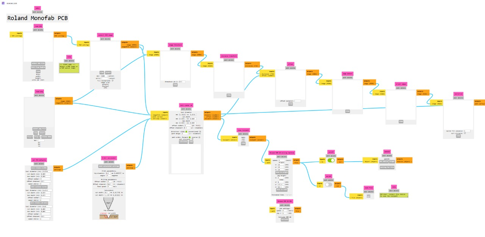

Nuestro equipo está conformado por dos estudiantes de la carrera Ingeniería Mecatrónica. Esta página sirve como carpeta de evidencias de lo que realizamos durante el semestre en la materia de “Producción Electrónica” dada por el Maestro Javier Osorio Figueroa .
La producción electrónica es el proceso integral que abarca desde el diseño, la fabricación de componentes y el ensamblaje, hasta las pruebas y el empaquetado final de productos que utilizan principios electrónicos, que incluyen:
El objetivo principal es adquirir experiencia práctica en el proceso completo de producción electrónica, desde el diseño conceptual hasta la materialización del prototipo.
Diseño de esquemáticos y PCB con reglas básicas y flujo recomendado de laboratorio.
En esta práctica comenzamos con el uso más detallado de KiCad. Lo primero que realizamos fue la descarga de la librería del FabLab, la cual contiene los componentes necesarios para elaborar nuestros respectivos circuitos con las especificaciones adecuadas. Cada integrante del equipo diseñó su propio circuito.
pistas PCB
Generación de trayectorias de fresado desde imágenes o gerbers.
Después de que cada uno haya diseñado sus diagramas, empleamos la página MODs (modsproject.org) una herramienta en línea que posibilita transformar los diseños de nuestros circuitos en archivos aptos para la fresadora. En primer lugar, subimos al programa los archivos PNG que creamos en KiCad (los diseños, las pistas y el contorno de la placa). A continuación, ajustamos las variables de fresado, entre ellas la profundidad, la velocidad de corte y el tipo de fresa. MODs opera a través de módulos interconectados, y cada módulo cumple una función particular: la lectura de imágenes, el establecimiento de trayectorias y la creación del archivo de salida. Al concluir, logramos obtener el código que usa Monofab para la fabricación física de la placa.
Proceso de fresado y obtención del prototipo físico.
Después de crear los archivos de trayectorias en MODs, comenzamos a emplear la máquina Monofab, que es la responsable de producir la placa de circuito impreso.
El procedimiento comenzó al poner la placa de cobre virgen en la máquina, asegurándola de forma adecuada para prevenir que se moviera durante el fresado. Luego,
elegimos y posicionamos la fresa correspondiente (en primer lugar, la de 1/64” para las pistas y luego la de 1/32” para el contorno), configurando con precisión la altura inicial
del instrumento para garantizar cortes homogéneos.
Después, en la Monofab, cargamos los archivos adquiridos en MODs y establecemos los parámetros fundamentales, como la velocidad, el punto de origen (home) y la profundidad del corte.
Cuando comenzó el proceso de fresado, la máquina fue eliminando el cobre de la superficie y
delineó las pistas del circuito según el diseño digital. Tras concluir esta etapa, se cambió la fresa para hacer el corte del contorno y, de este modo, obtener la forma
definitiva de la placa. Por último, al finalizar el mecanizado, sacamos la placa terminada y confirmamos que las pistas no presentaran imperfecciones y que estuvieran delineadas de manera correcta.
A través de este método, pasamos del diseño virtual a un prototipo
físico que funciona, lo cual nos permite entender de manera práctica cómo se produce una PCB por medio del fresado.
Evidencias
Accede a la segunda parte del portafolio, donde se encuentran las evidencias, proyectos y desarrollos correspondientes al segundo parcial.
Ir al Segundo ParcialExplora los proyectos y el trabajo realizado durante la tercera parte del semestre, incluyendo nuevas evidencias de producción electrónica.
Ir al Tercer Parcial